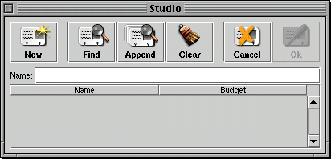

PATH
Documentation > WebObjects 4.5 >
Getting Started With Direct to Java Client
Controller Hierarchy
The most interesting part of the client side portion of a Direct to Java Client application is the controller hierarchy. The controller objects in the hierarchy are responsible for generating and managing the client application's user interface. The hierarchy as a whole describes the complete functionality of an application.
The controller hierarchy mirrors the hierarchy of windows and widgets that make up the client application's user interface. The root of the hierarchy is an EOApplication object. The EOApplication's subcontrollers are usually window or applet controllers, which themselves have subcontrollers.
For example, consider the select Studio dialog from the Tutorial application (Figure 2).

Figure 2. Select Studio Dialog
The branch of the controller hierarchy for this dialog looks like this:
EOModalDialogController
EOActionButtonsController
EOQueryController
EOTextFieldController
EOListController
EOTableController
EOTableColumnController
EOTableColumnController
The EOModalDialogController manages the select Studio dialog itself, the EOActionButtonsController manages the row of buttons at the top of the dialog, and so on.
© 1999 Apple Computer, Inc. – (Draft. Last updated 05 Jan 00)